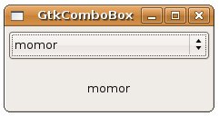

GtkComboBox可以建立下拉選單，以供使用者選取項目，GtkComboBox實現了Model-View模式，可提供豐富的項目類型與表現方式，但這也提高了程式撰寫時的複雜度，為此，GtkComboBox提供了gtk_combo_box_new_text()以建立一
般常用的文字下拉清單功能之GtkComboBox，若想要設定下拉清單中的文字項目，則可以使用gtk_combo_box_append_text
()、
gtk_combo_box_insert_text()、gtk_combo_box_prepend_text()、
gtk_combo_box_remove_text()、gtk_combo_box_get_active_text()等函式。
下面這個程式是個簡單的示範，實作只有文字選項的GtkComboBox，作為介紹GtkComboBox的開始，下拉選定項目後，會在下方的GtkLabel顯示所選中的文字：
#include <gtk/gtk.h>
gboolean combo_changed(GtkComboBox *comboBox, GtkLabel *label) {
gchar *active = gtk_combo_box_get_active_text(comboBox);
gtk_label_set_text(label, active);
}
int main(int argc, char *argv[]) {
GtkWidget *window;
GtkWidget *comboBox;
GtkWidget *label;
GtkWidget *vbox;
gtk_init(&argc, &argv);
window = gtk_window_new(GTK_WINDOW_TOPLEVEL);
gtk_window_set_title(GTK_WINDOW(window), "GtkComboBox");
gtk_window_set_default_size(GTK_WINDOW(window), 200, 50);
comboBox = gtk_combo_box_new_text();
gtk_combo_box_append_text(GTK_COMBO_BOX(comboBox), "caterpillar");
gtk_combo_box_append_text(GTK_COMBO_BOX(comboBox), "momor");
gtk_combo_box_append_text(GTK_COMBO_BOX(comboBox), "hamimi");
gtk_combo_box_append_text(GTK_COMBO_BOX(comboBox), "bush");
gtk_combo_box_set_active(GTK_COMBO_BOX(comboBox), 0);
label = gtk_label_new("caterpillar");
vbox = gtk_vbox_new(TRUE, 5);
gtk_box_pack_start(GTK_BOX(vbox), comboBox, TRUE, TRUE, 5);
gtk_box_pack_start(GTK_BOX(vbox), label, TRUE, TRUE, 5);
gtk_container_add(GTK_CONTAINER(window), vbox);
g_signal_connect(GTK_OBJECT(comboBox), "changed",
G_CALLBACK(combo_changed), label);
g_signal_connect(GTK_OBJECT(window), "destroy",
G_CALLBACK(gtk_main_quit), NULL);
gtk_widget_show_all(window);
gtk_main();
return 0;
}
一個執行時的畫面如下所示：

|
|